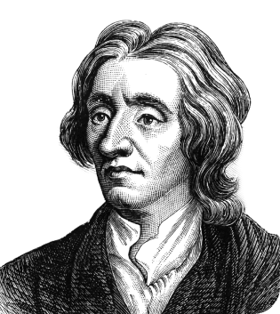
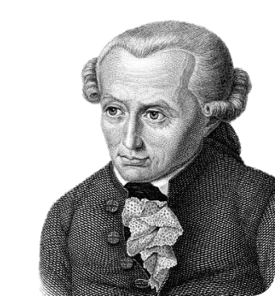

Bluntschli believes that force is an essential component of the state's structure. During the two World Wars, Great Britain defended its territory. Only military might may be used to combat Nazi armies. Furthermore, Russian military strength halted German soldiers' onslaught.
According to this idea, strong tribes' battles and aggressions had a significant role in the formation of the state. The saying "war begot the King'' is often used to explain the history of the state. In early civilization, force or strength took precedence over right. A physically stronger person can establish dominance over weaker others. The tribe's strongest member is designated as its chief or leader.
Natural theory sees the state as something that emerged from natural xevolution and not something that humans created. It is thought that it was influenced by kinship, religion, force and political awareness as time went on, therefore saying that the state evolves as to what humanity needs.
According to Aristotle, a man is a political animal by nature. In order to reach a man's full potential, they needed to be within the state where there is order and security. Outside the state, a man is only either a god or a beast.
The divine theory of governance, or the divine right of kings, is a political and religious principle that claims a monarch's authority to rule comes directly from God, rather than requiring the approval of the people, the nobility, or any other earthly authority. This theory is about political authority rather than how the state began. It suggests that God created the state and chose a deputy to govern it. According to this view, people are meant to live in a political society under this divinely appointed leader, who answers only to God. Following the ruler is seen as a religious duty, and opposing him is considered a sin. Supporters of this theory put the ruler above both the people and the law, with no earthly limits on his power or decisions.
The state has a divine nature that came from Western political thought, with the Jews being the first supporters.
The divine theory of governance, or the divine right of kings, is a political and religious principle that claims a monarch's authority to rule comes directly from God, rather than requiring the approval of the people, the nobility, or any other earthly authority. This theory is about political authority rather than how the state began. It suggests that God created the state and chose a deputy to govern it. According to this view, people are meant to live in a political society under this divinely appointed leader, who answers only to God. Following the ruler is seen as a religious duty, and opposing him is considered a sin. Supporters of this theory put the ruler above both the people and the law, with no earthly limits on his power or decisions.
The impact of good governance on a state is immense and cannot be overstated. It is crucial to recognize that a state's growth and development rely heavily on the government's approach to leadership, authority, and control. Many nations, particularly in Africa and specifically Nigeria, have faced significant developmental challenges due to poor governance. Since its inception, Nigeria has struggled with establishing a good, credible, and accountable government. The pursuit of good governance is seen as Nigeria's most pressing need. Many Nigerians firmly believe that poor leadership and bad governance have hindered the country's progress in nearly every area of human endeavor. (Nnamdi, 2009). Nigeria as a nation has produced leaders, who practically have nothing in mind to offer for the nation and her citizens, but to just become leaders, over the years. This is supported by Igbafe and Agbontean (2014)
1. State is an organization created by God. “God has created it for betterment” of people
2. It is the religious duty of the public to obey the king. To oppose the king means to oppose God
3. King is representative of God. He is accountable and responsible only to God
4. King is not under any law. He is law-maker
5. Order of the king is law and his actions are always just and kind
6. No power on earth can restrict the will and power of king
7. Royal power is inherited. King's son is his heir after his death
Overview of the
History of Social
Contract Theory
Social Contract Theory has its foundations in old Greece, beginning with Socrates, who recommended that people willfully go into a common agreement to make an equitable and moral society. The idea acquired huge consideration in the 17th century through the work of Thomas Hobbes. Hobbes contended that without an overseeing authority, individuals would live in a condition of consistent trepidation and viciousness. To get away from this, they enthusiastically surrender specific freedoms to a sovereign ruler in return for protection and security.
John Locke, additionally in the 17th century, developed this thought by underscoring individual privileges. He contended that the social contract's purpose is to safeguard these rights, and assuming that an administration neglects to do as such, individuals reserve the privilege to renegade and form another administration.
In the 18th century, Jean-Jacques Rousseau presented the idea of the "general will." He trusted that for a general public to be just, choices ought to be made on the whole considering the benefit of all, as opposed to individual interests.
What is the Social
Contract Theory
Social Contract Theory, a principal part of political way of thinking, investigates the perplexing connection among people and societal structures. The central reason of this hypothesis is that society's individuals certainly consent to surrender a few freedoms to authorities in return for the security of their excess freedoms. Promoters of Social Contract Theory explore the beginnings of moral and political order, focusing on how aggregate arrangements impact human existence.
The hypothesis' starting points lie in the Enlightenment era, where philosophers like John Locke and Jean-Jacques Rousseau thought about the human condition in a 'state of nature' — a speculative reality without political foundations. They contended that judicious people would agree to form a society governed by shared commitments, creating some distance from the solitary, harsh life characteristic of the state of nature. This shift is driven by an innate comprehension of moral standards and natural laws.
In the 20th century, John Rawls revived the hypothesis with his theory of justice,' reconsidering the social contract as a fair agreement among equals. Rawls underscored the job of moral people in making a fair society where political power is utilized to support all, especially the least advantaged. His thoughts have huge significance in contemporary conversations on value and reasonableness in educational and political organizations.
Social Contract Theory gives a system to figuring out the development of societal standards and the harmony between individual freedom and the collective good. It stays a prevailing hypothesis for investigating the philosophical groundworks of present day administration and social structures.
Social contract theory is a philosophical structure that inspects the beginnings and nature of society and the commitments people need to each other. Over the long haul, a few key givers have essentially molded this hypothesis with their remarkable viewpoints.
Thomas Hobbes was one of the earliest to investigate social contract theory. In his work Leviathan, Hobbes contended that people normally exist in a turbulent and self-intrigued state, known as the state of nature. He declared that people go into a common agreement to lay out a sovereign ruler, giving up specific freedoms in return for security and order.
John Locke gave a differentiating perspective. He set that people have basic privileges, like life, freedom, and property. As per Locke, the basic role of government is to safeguard these privileges, and in the event that it fails, people reserve the option to rebel.
Jean-Jacques Rousseau presented an alternate translation, focusing in the idea of the collective will. Rousseau accepted that society undermines people and that genuine freedom must be accomplished through direct democracy, where residents settle on choices collectively.
Immanuel Kant further fostered these hypotheses, accentuating the ethical element of social contract theory. He contended that people ought to act as indicated by widespread moral rules that can be legitimate through reason.
1. Government Legitimacy: Social Contract Theory provides a framework for understanding the legitimacy of governing authorities. It posits that a government's power is derived from the consent of the governed, with citizens willingly surrendering some individual freedoms in exchange for protection and the common good.
2. Legal Rights and Responsibilities: The theory helps define the rights and responsibilities of individuals within a society. It establishes boundaries of freedom and aids in the creation of laws and regulations that promote fairness, justice, and individual rights.
3. Social Stability: Emphasizing the importance of maintaining social stability, Social Contract Theory suggests that by agreeing to a set of rules and laws, individuals contribute to a cohesive and harmonious society where conflicts are resolved peacefully.
4. Social Welfare: The theory addresses the concept of social welfare, highlighting the government's responsibility toward its citizens. It argues that the government has a duty to meet the basic needs of its citizens and ensure a minimal level of well-being for all.
5. Democracy: Social Contract Theory is fundamental to the concept of democracy, asserting that power resides with the people who have the right to participate in decision-making processes. This theory underpins democratic institutions and practices.
In the digital age, where societies depend vigorously on advanced technologies, the pertinence and ramifications of social contract theory have become progressively obvious.
The ascent of digital advancements fundamentally changes the idea of consent and the connection among people and government. In the digital realm, consent is fundamental to cooperations between people, innovation, and states. The assortment and utilization of individual information by both government and privately owned businesses bring up significant issues about informed consent and the insurance regarding individual security.
Digital advancements likewise influence the connection among people and legislatures, as states use innovations to screen residents and authorize rules. This raises worries about adjusting security and freedom, with expanded advanced reconnaissance possibly encroaching upon people's privileges.
All in all, the computerized age acquaints new aspects with social contract theory . Consent and the individual-government relationship are significantly impacted by digital advancements. As society explores these technological developments, it is essential to critically analyze and adapt the social contract to ensure the protection of individual autonomy and privacy in this digital era.